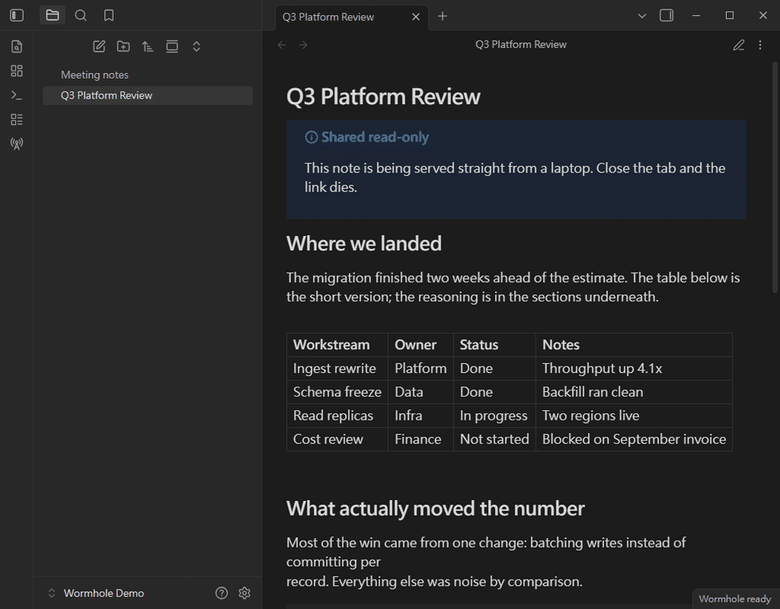

Ship an Obsidian plugin your agent actually got right 讓 AI 寫出的 Obsidian 外掛，真的過得了審查
Rules for building Obsidian plugins with a coding agent, plus a Claude Code skill that audits against them, fixes what it can, and drives a real Obsidian to check what static analysis cannot see. 一套給 AI 遵循的 Obsidian 外掛開發規則，加上一個 Claude Code skill：依規則稽核、自動修正機械性問題，並實際驅動 Obsidian 驗證靜態分析看不到的東西。
Why this exists為什麼需要這個
A plugin can typecheck, lint clean, pass every test, and still ship a feature that has never once rendered.
一個外掛可以型別檢查通過、lint 乾淨、測試全綠，同時帶著一個從來沒有顯示過的功能上架。
That happens when a guard tests an undocumented Obsidian internal that no longer exists. The block is skipped forever, silently, and a hand-written .d.ts keeps the compiler perfectly happy. No tool that reads source code will ever find it.
當守衛條件檢查的是一個已經不存在的 Obsidian 內部屬性時就會這樣。那段程式永遠被跳過，不報錯，而手寫的 .d.ts 讓編譯器毫無怨言。任何只讀原始碼的工具都找不到它。
This kit covers both halves: the static audit, and actually running the thing.
所以這套工具涵蓋兩半：靜態稽核，以及真的把它跑起來。
What's inside內容
📋 Development rules開發規則
Project structure, deprecated APIs and their replacements, security rules, lifecycle management, UI conventions, accessibility, and a submission checklist — written for an agent to follow while it codes.
專案結構、已棄用 API 與替代方案、安全規則、生命週期管理、UI 慣例、無障礙要求，以及送審檢查清單 —— 寫給 AI 在編碼時遵循。
🔍 Audit skill稽核 skill
A Claude Code skill that greps the codebase against every rule, reports findings by severity, and auto-fixes the mechanical ones after you approve.
一個 Claude Code skill，依每條規則掃描程式碼、按嚴重度分級回報，並在你同意後自動修正機械性問題。
🎬 Demo captureDemo 錄製
Scripts that drive a real Obsidian over the Electron debugging protocol, verify runtime behaviour, and turn UI states into README GIFs. Zero dependencies.
透過 Electron 除錯協定驅動真實 Obsidian，驗證執行期行為，並把 UI 狀態做成 README 用的 GIF。零依賴。
What the audit checks稽核涵蓋範圍
Findings are graded BLOCKER, MAJOR, MINOR, PERF and DEBT. findings 分為 BLOCKER、MAJOR、MINOR、PERF、DEBT 五級。
| Area面向 | Examples範例 |
|---|---|
| ManifestManifest | id/name/description, minAppVersion, isDesktopOnly, versions.json |
| Security安全 | innerHTML, eval, remote code遠端程式碼, fetch → requestUrl |
| API misuseAPI 誤用 | process.platform, hardcoded寫死的 .obsidian, instanceof, regex lookbehind正則後查 |
| Lifecycle生命週期 | Unregistered events and intervals, cleanup on unload未註冊的事件與計時器、unload 清理 |
| UI/UX | Sentence case, inline styles, hardcoded colours, accessibility句首大寫、行內樣式、寫死顏色、無障礙 |
| Policy政策 | Installing dependencies, missing network and file-access disclosures安裝依賴、缺少網路與檔案存取揭露 |
| Runtime-only僅執行期 | Dead guards on internals, modal promises that never settle, DOM left behind on unload內部屬性的死守衛、永不 settle 的 modal promise、unload 後殘留的 DOM |
Demos, captured from the real app從真實應用程式錄製的 Demo
The capture scripts photograph one UI state at a time and give each its own duration, rather than recording video — so every state is held long enough to read, and the file stays small. The mouse cursor is composited afterwards, because screenshots taken this way contain no pointer.
錄製腳本不是錄影，而是逐個 UI 狀態拍照、每格各自設定停留時間 —— 所以每個狀態都停得夠久看得懂，檔案也小得多。游標是事後合成上去的，因為這種方式擷取的截圖不含滑鼠指標。

Two things to know before you submit送審前必須知道的兩件事
The submission process changed in 2026. Plugins are no longer submitted by opening a pull request against obsidianmd/obsidian-releases — that repository is now a read-only registry. Submission happens at community.obsidian.md with an Obsidian account linked to your GitHub account, and the directory reads manifest.json from your default branch HEAD. A lot of guidance still describes the old flow.
送審流程在 2026 年改了。外掛不再透過對 obsidianmd/obsidian-releases 開 pull request 送審 —— 那個 repo 現在是唯讀的登錄檔。改到 community.obsidian.md，用 Obsidian 帳號登入並連結 GitHub 帳號，而目錄讀取的是你預設分支 HEAD 的 manifest.json。網路上很多說明仍在講舊流程。
A plugin must not install its own dependencies. The developer policies forbid installing "themselves or their dependencies" — which includes downloading a helper binary or CLI at runtime. Pinning the version and verifying a checksum makes it safe, not permitted. Every comparable plugin currently listed (pandoc, ffmpeg, git) relies on a binary the user installed.
外掛不能自行安裝依賴。開發者政策禁止外掛安裝「自己或自己的依賴」—— 包含在執行期下載輔助執行檔或 CLI。釘版本、驗 checksum 只能讓它變得安全，不會讓它變得被允許。目前架上所有同類外掛（pandoc、ffmpeg、git）用的都是使用者自己安裝的執行檔。
Install安裝
Clone the repository and copy the skill into your skills directory:
複製 repo，把 skill 放進你的 skills 目錄：
git clone https://github.com/VaalRL/obsidian-plugin-agent-kit.git
cd obsidian-plugin-agent-kit
# Personal — available in every project
cp -r skills/audit-obsidian-plugin ~/.claude/skills/
# Or per project
cp -r skills/audit-obsidian-plugin .claude/skills/Then ask Claude to audit, review or check your plugin.
然後請 Claude 稽核、審查或檢查你的外掛即可。
Recording demos錄製 demo
PLUGIN_DIR=/path/to/your/plugin node scripts/demo-capture/setup-demo.mjsIt uses an isolated --user-data-dir, so your real vault list, plugins and settings are never touched. Needs Node 22+ and Python with Pillow — nothing else to install.
使用隔離的 --user-data-dir，所以你真正的 vault 清單、外掛與設定完全不受影響。需要 Node 22+ 與裝有 Pillow 的 Python —— 其他什麼都不用裝。
Where this came from這套東西的來源
All of it was extracted from taking a real plugin — Note Wormhole — through the Community directory review. The rules are the ones that actually came up. The audit checks the things that were actually wrong. The capture scripts are the ones that produced that plugin's README GIFs.
全部萃取自帶著一個真實外掛 —— Note Wormhole —— 走完 Community 目錄審查的過程。規則是實際遇到的那些，稽核檢查的是實際出錯的地方，錄製腳本就是產出那個外掛 README GIF 的同一套。